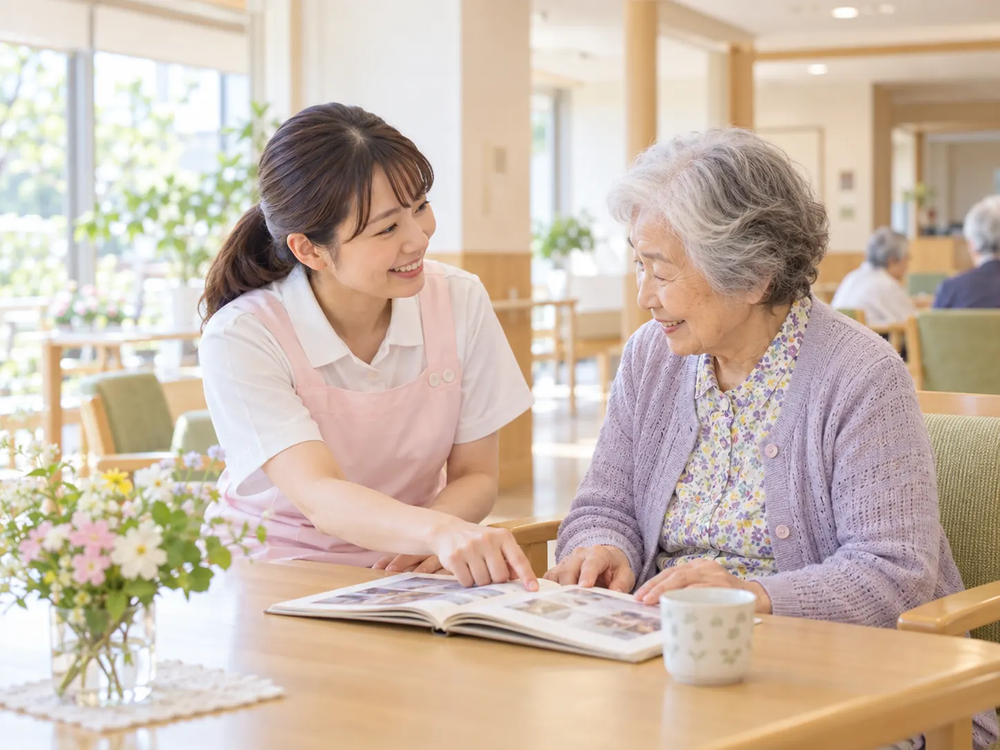
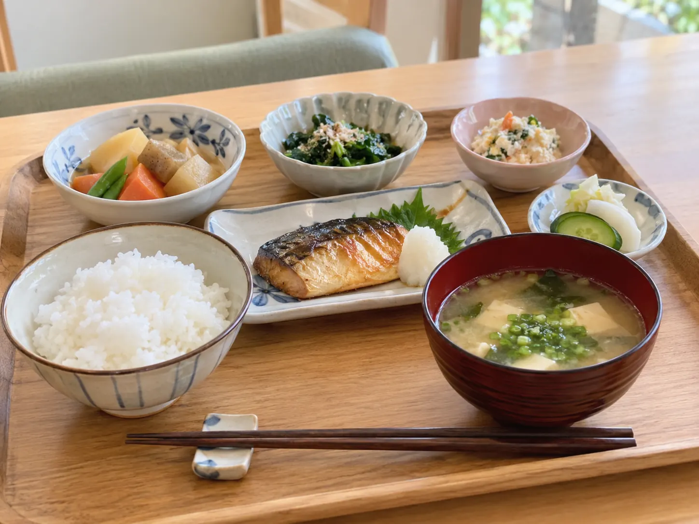

01
一人ひとりに寄り添う介護
お食事や入浴、移動など、日々の暮らしに必要なサポートをその方の状態に合わせて行います。
できることを大切にしながら、安心して生活できる環境を整えています。
CONCEPT
花澄の杜では、これまで歩んでこられた人生や
大切にしている時間を尊重しながら、
一人ひとりに合った暮らしを一緒に考えています。
好きなこと、落ち着く時間、ご家族との思い出。
その方らしさを大切にしながら、
安心して毎日を過ごせる環境を整えています。

LIFE & SUPPORT
01
お食事や入浴、移動など、日々の暮らしに必要なサポートをその方の状態に合わせて行います。
できることを大切にしながら、安心して生活できる環境を整えています。
02
スタッフ同士で日々の様子を共有し、小さな変化にも気づける環境づくりを大切にしています。
必要に応じて医療機関とも連携し、穏やかな暮らしを支えます。
MEAL
季節の食材を取り入れながら、栄養バランスにも配慮したお食事をご用意しています。
お身体の状態に合わせた食事形態にも対応し、毎日の食事を楽しんでいただけるよう心がけています。

LIFE SUPPORT
身元保証人についてお困りの方や、現在の住まいに不安を抱えている方など、
さまざまな事情をお持ちの方のご相談を受け付けています。
CONTACT